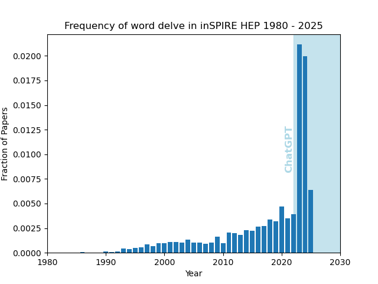

Delving into focal words on inSPIRE HEP
You've probably noticed that large language models (LLMs) have favourite words that they use more often than human writers. These are known as focal words and the phenomena of focal words is non-trivial. 2412.11385 call it 'the puzzle of lexical overrepresentation'.
I thought I'd check out the appearance of a focal word in the high-energy physics literature by querying the inSPIRE HEP database. I use the 'fulltext' search and looked at the word 'delve'. I think this does some kind of stemming so that, e.g., 'delve' also matches 'delving'. I normalized the results to the total number of papers per year. The results are:

Of course, authors could be influenced by LLMs or imitating 'good' writing produced by LLMs. I don't know much about this field. Make of it what you will.
I can understand the spike, but I'm not sure why it decreased back down in 2025. Perhaps LLMs have evolved and 'delve' isn't such a common focal word anymore? Perhaps writers are conscious about hallmarks of LLMs in their work and edit instances of 'delve'? Perhaps 'delve' was a buzzword that entered popular consciousness because of LLMs?